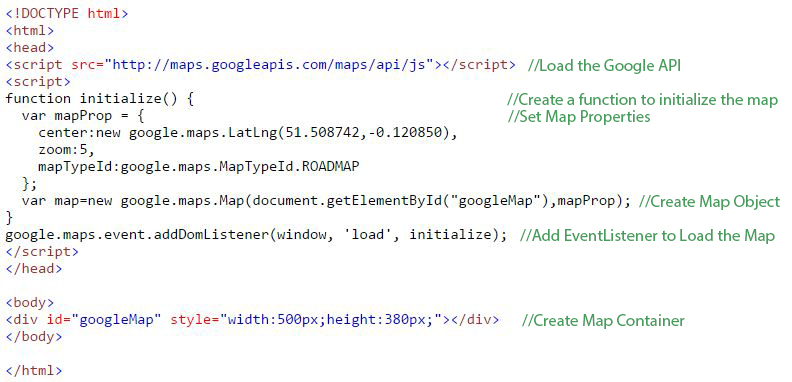
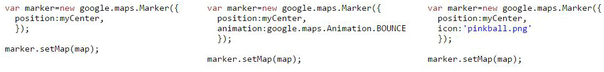

FNP Google Map Application & Tutorial
FNP Google Map Application
The application used these Google Map Objects: Map, LatLng, LatLngBounds, Polygon, Marker, MarkerWithLabel, InfoWindow.
Listeners:
- (polygon, 'mousemove'): show MarkerWithLabel(County Name Label) at polygon LatLngBounds.getCenter() if zoom level lower than 10 and no InfoWindow is open
- (polygon, "mouseout"): hide MarkerWithLabel(County Name Label)
- (label or polygon, 'click'): hide other Markers and only show this Marker with InfoWindow
- (infoWindow,'closeclick'): hide all Markers
Other Objects Used:
- County Info: name, contact, extension, address, phone, email, latitude, longtitude
- County Coordinates: name, coordinates
- Markers: all Marker Objects
- Labels: all MarkerWithLabel Objects
- InfoWindows: all InfoWindow Objects
Create a Map
This example creates a Google Map centered in London, England:
Source: http://www.w3schools.com/googleapi/google_maps_basic.asp
Overlays - Marker
Basic marker, with animation and icon instead of marker:
Also we can define complex icons as MarkerImage objects:

Overlays - Polyline
A Polyline is drawn through a series of coordinates in an ordered sequence.
Properties:
- path: array of LatLng objects
- strokeColor: hexadecimal color (format: "#FFFFFF")
- strokeOpacity: a value between 0.0 and 1.0
- strokeWeight: in pixels
- editable: true/false

Overlays - Polygon
A Polygon is similar to a Polyline but it is designed to define regions within a closed loop.
Additional Properties:
- fillColor: hexadecimal color (format: "#FFFFFF")
- fillOpacity: a value between 0.0 and 1.0

Overlays - Circle
A Circle is similar to a Polygon but in different shape.
Different Properties:
- center: LatLng object
- radius: in meters

Overlays - InfoWindow
An InfoWindow shows text content for a marker:

Events
| Event | Arguments | Description |
| bounds_changed | None | Fired when the viewport bounds have changed |
| center_changed | None | Fired when the map center property changes |
| click | MouseEvent | Fired when the user clicks on the map |
| dblclick | MouseEvent | Fired when the user double-clicks on the map |
| drag | None | Fired repeatedly while the user drags the map |
| dragend | None | Fired when the user stops dragging the map |
| dragstart | None | Fired when the user starts dragging the map |
| heading_changed | None | Fired when the map heading property changes |
| idle | None | Fired when the map becomes idle after panning or zooming |
| maptypeid_changed | None | Fired when the mapTypeId property changes |
| mousemove | MouseEvent | Fired whenever the user's mouse moves over the map container |
| mouseout | MouseEvent | Fired when the user's mouse exits the map container |
| mouseover | MouseEvent | Fired when the user's mouse enters the map container |
| projection_changed | None | Fired when the projection has changed |
| resize | None | Fired when the map (div) changes size |
| rightclick | MouseEvent | Fired when the user right-clicks on the map |
| tilesloaded | None | Fired when the visible tiles have finished loading |
| tilt_changed | None | Fired when the map tilt property changes |
| zoom_changed | None | Fired when the map zoom property changes |
Example of "center_changed":

Controls
Default Controls:
- Zoom: displays a slider or "+/-" buttons to control the zoom level of the map
- Pan: displays a pan control for panning the map
- MapType: lets the user toggle between map types (roadmap and satellite)
- Street View: displays a Pegman icon which can be dragged to the map to enable Street View
More Controls:
- Scale: displays a map scale element
- Rotate: displays a small circular icon which allows you to rotate maps
- Overview Map: displays a thumbnail overview map reflecting the current map viewport within a wider area